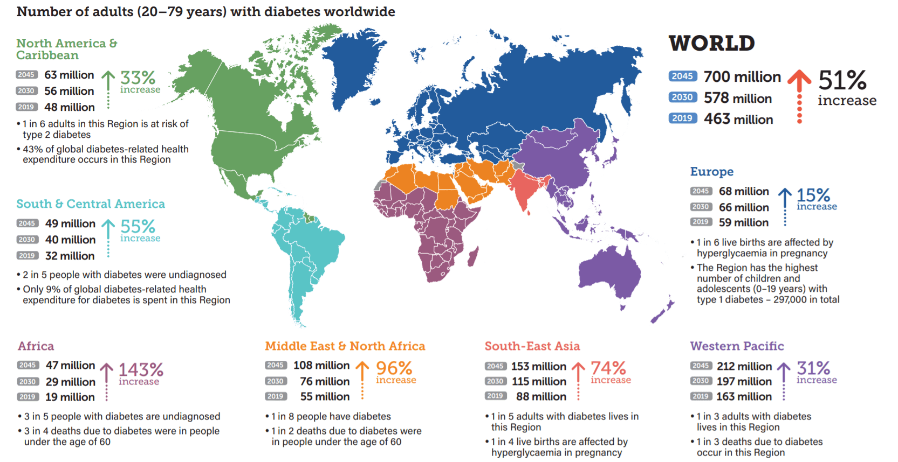

| Abstract |
| Introduction: What is diabetes? |
| 1. Monitoring diabetes: Cause and prevention |
| 2. Treating diabetes: drug delivery and development |
| Conclusions |
| References |
Monitoring blood glucose levels is critical for a diabetic patient. To ensure that glycaemic control is obtained, there are a range of anti-diabetic treatments which cannot restore the lost functional beta-cell mass but can help in the management of glycaemia. These treatments include monitoring of the blood glucose levels via skin mounted patches i.e. transdermal applications and subcutaneous methods such as injecting insulin into a diabetic person, meanwhile chemist and engineers alike are investigating other approaches such as oral, nasal and buccal applications. Given the evolving nature of diabetes, there is an increase in research of treatments, and a large variety of therapeutic approaches have been proposed. Despite the struggle in monitoring diabetes, engineers have proposed many ways in which alleviates the ‘’disturbances’’ that may come with managing diabetes.
Diabetes is a metabolic disease which is defined by the elevated blood glucose level. They are comprised of four types which are as follows: type 1, type 2, pre-diabetes and gestational diabetes, with type 1 and 2 accounting for ~95% of the diagnosed forms worldwide. Type 1 diabetes involves the autoimmune destruction of beta-cells which produce insulin whereas type 2 diabetes involves insulin resistance where the beta-cells are either lost or have impaired function. If untreated this can result to hyperglycaemia in which the body performs cardiovascular and neurological complications and hypoglycaemia where the body experiences fatigue and ultimately premature death.
The worldwide distribution of diabetes by the World Health Organisation predicts ~700 million people worldwide would be affected by diabetes by 2045 (Diabetes rising worldwide: 1 in 11 adults affected (2019)). Thus, diabetes is soon to be one of the largest public health issues globally. Overall, diabetes is becoming one of the leading causes of many dire physical complications as well infections which considerably lowers the life expectancy of the future generations to come.
Figure 1: Worldwide distribution of adults with diabetes, predicted by the World Health Organization from the years 2019-2045.

Figure 1 — Worldwide distribution of adults with diabetes (WHO 2019–2045)
Blood glucose levels can be monitored via the meal a patient consumes, proving to be a major disturbance in varying blood glucose levels.
To be diagnosed as diabetic, a person’s blood glucose level needs to be equal to or above a certain value. There are three methods for the diagnosis of diabetes (Diabetes Diagnosis & Tests | ADA (no date)):
There are many causes of diabetes which is one of the most prevalent diseases worldwide, considerably Type 2 diabetes which consists of ~90% of the population in the UK (Khan, R. et al. (2019)) which are all suffering from obesity.
A study conducted on the health of nurses by Wild and Byrne, it was found that women whose BMI was greater than 35 had more chance of developing T2DM compared to those whose BMI was less than 22. Studies on men have shown similar results. For Asians (mostly Indians), the onset of higher risk of diabetes starts at an even lower BMI value (15–20). However, recent studies have shown that larger waist circumference could be a better indication of developing T2DM than BMI, as several studies in China state that the risk of developing T2DM can be lowered through decent weight loss (Cheung, B.M.Y. and Li, C. (2012)). Furthermore, various studies indicate that a sedentary lifestyle is a major cause in developing type 2 diabetes such as watching television which lowers the metabolic rate therefore becoming less physically active, hence increasing their BMI. To prevent this, replacing 30 minutes or so of a sedentary lifestyle with exercise would improve insulin sensitivity by 15% - which links to obesity being a major cause of diabetes.
Gender has a large role to play, with more men being diagnosed with diabetes compared to women, this is due to the anatomy of both men and women being different, their body fat distribution as men have more visceral fat compared to women. The differences in fat distribution is an underlying reason for the many more cases of diabetes within men however environmental factors could also have an effect such as stress, sleep and lifestyle (such as smoking and consumption of alcohol) as this varies not only between person to person but also proves to be different for males and females. Additionally, due to the overlap of hypertension and diabetes it is difficult to determine if one causes the other or not. Cheung and Li have suggested that both the diseases might carry the same or similar etymology and disease mechanisms (Cheung, B.M.Y. and Li, C. (2012)). In the Hong Kong Cardiovascular Risk Factor Prevalence Study, Cheung found that only 42% of the diabetes patients had normal blood pressure and 56% of the hypertension patients had normal blood glucose level (Cheung, B.M.Y. and Li, C. (2012)). Cheung and Li have concluded that both diabetes and hypertension are the results of a metabolic syndrome which is caused by obesity (Cheung, B.M.Y. and Li, C. (2012)). Therefore, obesity is a risk factor for both diseases.
There are many tests of metabolites such as at home blood glucose tests (glucometers), which involve inserting a clean test strip into a device known as a glucometer and prinking the fingertip using a lancet (needle on the blood sampling device) to obtain a small drop of blood onto the test strip without smearing it in order to display an accurate blood glucose level. Glucometers provide diabetic patients with a fast and somewhat accurate measurements of blood glucose however environmental factors could always lead to inaccuracy.
In response to this, modern methods of glucose sensing has taken place- one being a glucose-sensing patch alongside insulin pumps that detects glucose present in interstitial fluids, buccal routes which offer a series of advantages such as avoiding the metabolism of insulin via low enzymatic activity and ease of accessibility, oral delivery such as a spray form of insulin which is a less painful method however is not a replacement for all intakes of insulin.
Subcutaneous injections are the most widespread mode of insulin delivery despite it being a more painful method, it proves to be most effective. As efficient as it may seem, due to its fast-acting nature, it also proves to be flawed as concerns revolve around it such as pain, self-injection, lifestyle restrictions and phobias. Despite it being the most used form of insulin intake, recent improvements have been made with ‘’ultra-rapid acting’’ insulin which aims to reduce the risks of conditions such as hypoglycaemia therefore being able to control their blood glucose levels to the point of prevention of premature death.
Despite diabetes being one of the most common diseases worldwide, there are many ways to prevent this by maintaining a healthy lifestyle and an ideal diet. Furthermore, research is still being sought out on how to produce a more efficient way to take insulin which is still as fast acting as subcutaneous methods but without producing discomfort to the patient. By establishing this article there is only hope that it has provided invaluable insight on diabetes, how it is caused and how it can be treated as of now and how modern technology aims to advance the drug delivery of diabetes.
'Classification and diagnosis of diabetes' (2014) In Special Collection: ADA Medical Affairs Article Collection , Review Articles American Diabetes Association [Preprint]
Diabetes Diagnosis & Tests | ADA (no date). https://diabetes.org/about-diabetes/diagnosis.
Khan, R. et al. (2019) 'From Pre-Diabetes to Diabetes: Diagnosis, Treatments and Translational research,' Medicina, 55(9), p. 546. https://doi.org/10.3390/medicina55090546.
Szunerits, S. et al. (2021) 'The impact of chemical engineering and technological advances on managing diabetes: present and future concepts,' dial.uclouvain.be [Preprint]. https://dial.uclouvain.be/pr/boreal/object/boreal:243437.
Cheung, B.M.Y. and Li, C. (2012) 'Diabetes and hypertension: Is there a common metabolic pathway?,' Current Atherosclerosis Reports, 14(2), pp. 160–166. https://doi.org/10.1007/s11883-012-0227-2.
Diabetes rising worldwide: 1 in 11 adults affected (2019). https://www.zmescience.com/science/diabetes-rising-worldwide-one-in-11-adults-affected/.